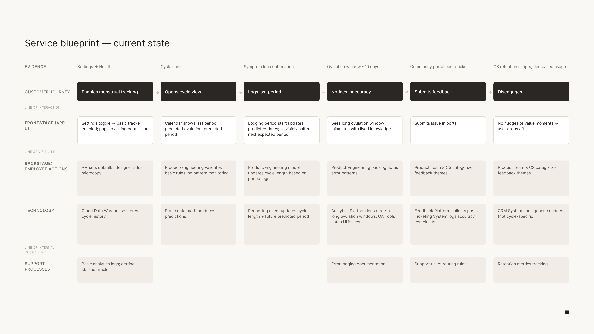
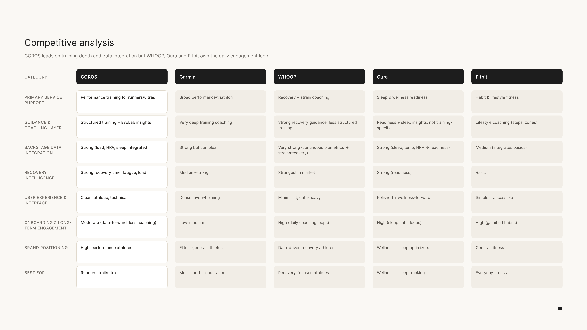
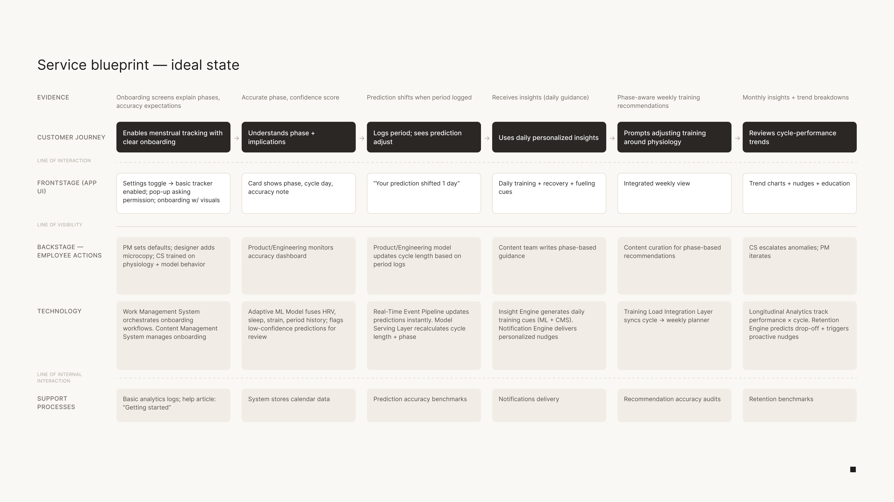

Overview
COROS reads the body better than almost anyone: training load, recovery, HRV. It never clocked where you are in your cycle. I redesigned the service so cycle data actually reaches a training decision, then drew the watch and phone screens that carry it. Concept work, done from the outside, while COROS shipped their own version halfway through.
The app can tell you you’re 100% recovered on a morning you feel like 20%.
How do you connect a cycle to a training decision, without pretending the prediction is certain?
Hormones move on a roughly 28-day cycle, and those shifts change how you recover, how you sleep, and how training feels. The effect is real and it’s individual, which is exactly the excuse most wearables use to leave it out. COROS reads the body better than almost anyone. It never clocked the one variable that reshapes all of those readings every month. Wearables still default to the male body, and the cycle is exactly what that default leaves out.
Midway through, COROS shipped their own version. It confirmed what I’d wagered on: predictions that were visibly off, nothing to learn from, and no line drawn between the cycle and how you actually train. It tracks a period, not a cycle. The capability was there. The connection wasn’t.
A calendar that counts a period, sitting a long way from anything you train with.
The cycle card lives at the bottom of the Today list. Open it and you get a phase name, a day count, and a wall of undifferentiated text. Nothing on the screen connects any of it to load, recovery, or what to do this morning.
 Not my designCOROS screen 12.14.2025
Not my designCOROS screen 12.14.2025 Not my designCOROS screen 12.14.2025
Not my designCOROS screen 12.14.2025 Not my designCOROS screen 12.14.2025
Not my designCOROS screen 12.14.2025 Not my designCOROS screen 12.14.2025
Not my designCOROS screen 12.14.2025Three findings that decided the whole redesign
There is no loop.
Data flows in (cycle length, symptoms, sleep) and nothing meaningful flows back out. The user does all the logging and gets a calendar in return.
COROS is strong at the hard part.
Against Garmin, WHOOP, Oura and Fitbit, its training load and recovery intelligence hold up. What’s missing is the last mile: turning physiology into something you can act on this morning.
“Too individual to predict” is not a real reason.
HRV, sleep and recovery are all noisy and personal, and the whole product is built on learning your baseline over time. They had the method. They never pointed it at the cycle.
Mapping the service from the outside
I mapped the frontstage from the app itself and inferred the backstage from how it behaves. Even at that resolution it broke in the same place everywhere. That single structural gap became the thing the entire redesign had to fix; every decision below traces back to it.

Current-state service blueprint
Where the real opportunity sat
The read that mattered wasn’t the feature grid. So I didn’t set out to design a new feature. I set out to build the bridge between the intelligence COROS already has and a decision the female athlete can actually make today.

Competitive audit · Garmin, WHOOP, Oura, Fitbit
The service, rebuilt around the loop
Every touchpoint now has to earn its place by connecting cycle data to a training decision. The backstage stops being a passive store: it learns from behavior, sharpens its predictions over time, and finally closes the loop the audit exposed. Data in, guidance back.

Redesigned blueprint · the ideal state
Two directions I built, tested, and cut


Six screens before the app. Click any to read it
My first instinct was to teach everything up front. If hormones reshape training, the app should explain the whole cycle before you start, so I built a heavy educational onboarding: phase by phase, hormone curves, the works.
It tested clunky. Nobody wants a biology lecture between turning the feature on and using it, and by the time people reached the dashboard they’d forgotten most of it anyway. Education wasn’t the mistake. Front-loading it was.
Onboarding got cut to what genuinely has to happen first: one idea and two questions. The intro teaches a single principle, “work with your body, not against it.” Setup asks only for your last period and average cycle length. Everything else moved into the app, surfaced the moment it’s useful.


Drag to compare
A ring of 28 circles instead of a solid arc, one per day of the cycle. Colour carried the phase and fill carried time: solid for the days you’d already lived, outlines for the ones still ahead, and a small marker on today. The fertile days got a hatched treatment so they read like a cell instead of a swatch. That was the part I liked.
Though it was a fun idea, it did not survive the size of the screen. At watch scale the circles collapsed into noise, the boundaries between phases stopped being readable at a glance, and the palette I needed to tell four phases apart in dots failed visibility and color contrast standards. A watch face gets about a second of attention. Anything that needs a second look has already failed.
The continuous arc: four solid segments, one marker for today, and the phase named in plain text underneath. It gives up the hatching, and it passes contrast and stays legible in daylight on a wrist, which is the only condition this screen is ever read in.
Turn the intelligence COROS already has into a decision she can make this morning.
Three moves carry the whole redesign. In the current app there’s no phase insight on the dashboard at all: to learn about your phase you open the cycle tracker and read a wall of text, in one place, while your training lives in another. Everything here exists to close that distance.


The Phase Insights card sits directly under your daily activity and above the training calendar. Placement is the argument. The card doesn’t ask to be visited, it sits in the path you were already walking. It names the phase in plain language, gives you sleep, strain and stress tolerance in one glance, and states the day and its confidence honestly, so a wrong prediction reads as a system still learning rather than a system that’s wrong about you. You don’t go find the connection. It’s already made.
The original feature tracked a period. It didn’t teach you anything about the cycle driving it, so education stopped being an onboarding lecture and became part of the app. Tap a phase and you get the hormone curve, what it means for sleep, strain and stress tolerance, and what to do with that today. Every phase says the same four things, so you learn the pattern once and read it forever.
The loop only works if the data keeps coming, and the phone is the wrong place to ask for it. A cycle screen on the watch shows the day and the phase at a glance, and takes a period log in two taps. Logging now happens wherever you already are, which is the difference between a feature people try and a feature people keep.
The onboarding I landed on, and the insights it hands off to.
Two questions, one principle, and then out of your way.
Start on the intro, set your last period and cycle length, and the dashboard opens on the phase you’re actually in. The Phase Insights card is where the whole argument lives, so tap through to a phase and read what it tells you to do today.
What this one changed about how I work
Screens were the last thing I drew
Service design was the part I didn’t expect. It forced me to think past the screen: the data pipelines, the CS workflows, the PM tradeoffs that quietly decide what a user ever sees. I approach every design problem differently now because of it.
Reading a backstage you can’t see
I’m not inside the company, so I had to infer the backstage from how the product behaves and stay honest about the parts I couldn’t know. Working at that resolution was humbling in the useful way.
Getting scooped is free validation
When COROS shipped their version mid-project, I got to test my research-driven approach against what a real product team actually built. Humbling and validating at the same time.
The assumption I can’t validate alone
Everything here rests on the prediction model getting accurate enough to earn trust by cycle three. That’s the one thing I’d pressure-test with real users next. This one stayed a concept, so I never got live numbers. But if it shipped, the metric I’d watch isn’t downloads; it’s whether people are still logging in month three. That’s the only real proof the loop gives something back.